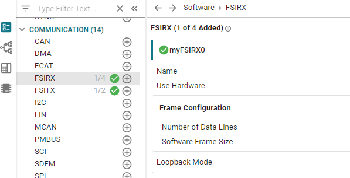
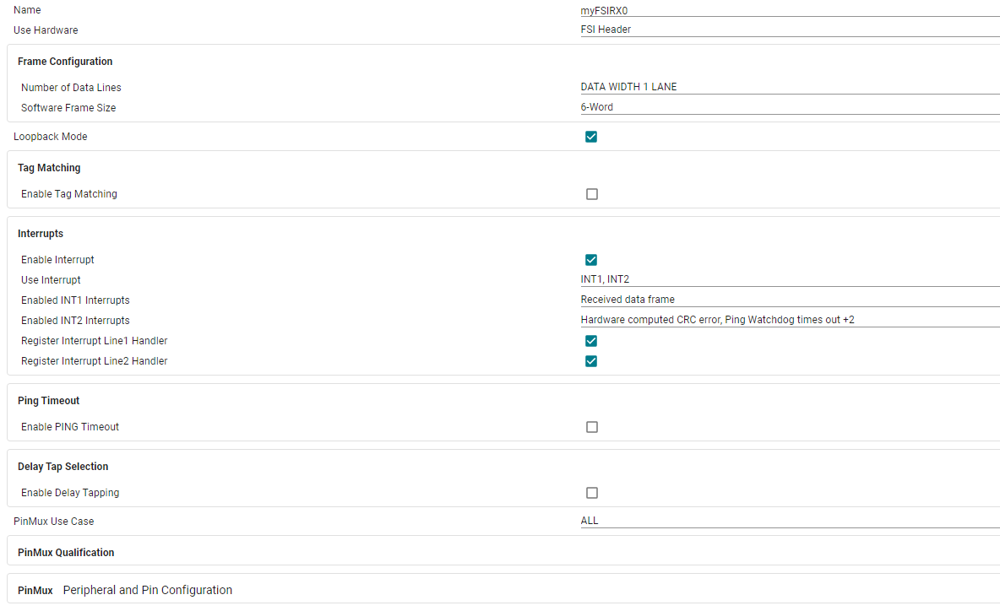
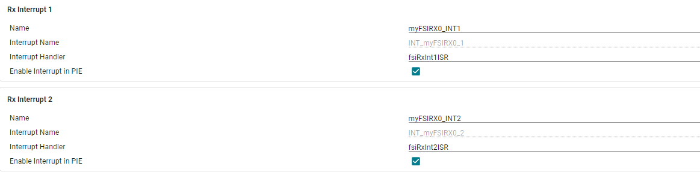
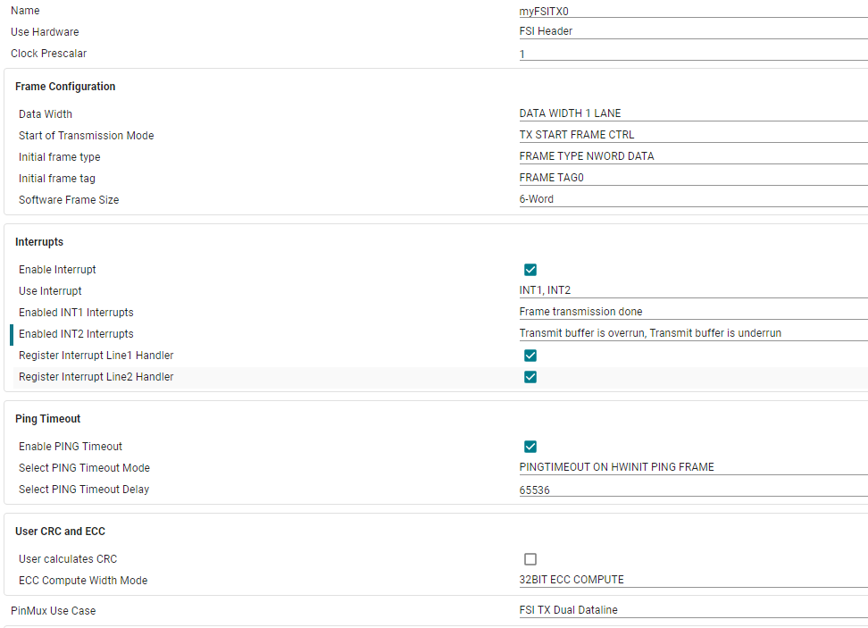
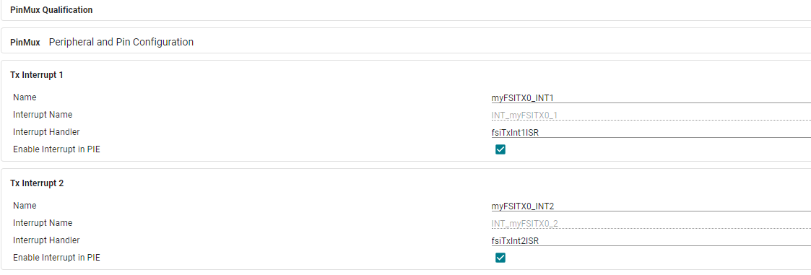
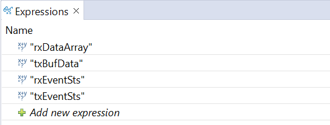

Fast Serial Interface (FSI) Lab#
The objective of this lab is to become familiar with the on-board FSI (Fast Serial Interface) by sending and receiving data between the receiver (FSIRX) and transmitter (FSITX) modules. During initialization, the transmitter module will be configured to send a ping frame periodically to service the receiver module’s ping watch-dog timer. Data frames will be triggered via software and the data transmitted will be compared against the data received in the receiver ISR to check for errors. Interrupts will be triggered on error events for both the receiver and transmitter modules. the receiver and transmitter modules will be connected via internal loop-back mode.
Note:
Not all C2000 devices have the Fast Serial Interface (FSI) module. Please check the C2000 Peripherals Reference Guide to see if your device has FSI.
Solution#
The Academy lab modules provide step-by-step instructions for users to follow along and carry out; however, the completed software solutions are also available in the device’s SDK.
See your device’s specific SDK to obtain this lab’s software solution.
You can download your device’s SDK by going to the device’s product page on TI’s website and navigating to the ‘Design & Development’ and ‘Software Development’ tabs.
This specific lab’s solution can be found in: [Device_SDK_Install_Path]/examples/driverlib/single_core/fsi.
Overview#
In this lab, we will learn to use the FSI module of C2000 real-time Microcontrollers by using TI LaunchPad or controlCARD. This module will help you understand how C2000 devices communicate with external devices or with each other over FSI based serial communication. We will use SysConfig GUI to configure the FSI module for internal loopback communication using ping frames to maintain communication between the receiver and transmitter modules.
Lab Setup#
Hardware Setup#
Required hardware for this lab:
ControlSOM with the supplied USB cable.
Oscilloscope (optional).
This lab exercise is intended for the F29H85x ControlSOM. Before continuing this lab, please be sure to reference the ControlSOM User Guide for hardware setup details.
Using the supplied USB cable, connect the USB Type-C connector into your C2000 board and the USB Standard Type-A connector into your computer’s USB port.
Please note that the docking station is not necessary for this lab but may be required to successfully run other Academy labs.
If you are using the ControlSOM docking station, an additional power supply is needed for the docking station. See the ControlSOM User Guide for more details.
Check the power status LEDs (LED0 and LED1) to confirm that the board is powered and provides a JTAG communication link between the device and CCS.
Software Setup#
Required software for this lab:
The device’s SDK
Your device’s software development kit (SDK) download can be found on the “Software Development” section of your device’s product page on TI’s website.
The Code Composer Studio (CCS) platform.
See the CCS User’s Guide for more information about this IDE.
Start a CCS Project#
Our first task is to import an empty project to our Code Composer Studio (CCS) workspace. The basic instructions are as follows:
Open CCS and go to Project→Import CCS Projects. A new window should appear. Ensure that the Select search-directory option is activated.
Click the Browse button and select the
<device_name>-SDK_install_path>/mcu_sdk_<device_name>/examples/driverlib/single_core/empty_projects/empty_driverlib_projectdirectory.Under Discovered Projects, you should now see the
empty_driverlib_projectproject.

Click Finish to import and copy the
empty_driverlib_projectinto your CCS workspace.After the project has been imported, the project explorer window should look like below:

Rename the project:
Right-click on the project in the “Project Explorer” panel. Select Rename from the drop-down menu and rename the project to ‘fsi_academy_lab’ or a name of your choosing.
Now click the Down Arrow located to the left of the imported project to expand it and select
empty_driverlib_project.c. Right-click on the file, and select Rename to rename the file to ‘fsi_academy_lab.c’ or a name of your choosing.
Configure the FSI#
The first task is to set up the FSI peripheral with the following specifications:
FSITX:
Single data line transmission
6 word data length
INT1 generated on frame transmission complete
Enable PING timeout and appropriate PING timer period
FSIRX:
Single data line transmission
Enable internal loopback mode
INT1 generated on received data frame
INT2 generated on ping timeout, CRC error, end of frame error or invalid frame type
In order to do this, open the file with the “.syscfg” extension within the project by double clicking it. You’ll see the SysConfig tool open within CCS. Add the FSIRX and FSITX modules by clicking on the (+) sign next to each on the left panel.


Now, we can configure our FSIRX and FSITX settings based on our configuration specifications.
Configure FSIRX#
First, we will configure the FSI receiver module.




In SysConfig settings above, the RX ping watchdog timer is left disabled; however, we will enable this feature later in our main() function since it should be the last step in our configuration. The ping watchdog timer is meant to detect the absence of a ping frame being transmitted from the FSITX module. When the watchdog timer is enabled and a watchdog timeout occurs, the FSIRX module can generate an interrupt for the user to handle a missing ping frame.
For INT2 interrupt sources, select “Ping watchdog times out”, “Hardware computed CRC error”, “Invalid frame type detected”, and Invalid EndOfFrame bit-pattern.
Configure FSITX#
Now, we will configure the FSI transmitter module.




You have now configured the FSI module for this lab.
Program Setup#
Now that we have set up the FSITX and FSIRX modules within SysConfig we can move on to actually writing the application code for the intent of this lab.
Define Global Macros and Variables#
In our main (.c) file you’ll notice that board.h is called. This is the header
file that is being generated by SysConfig. The driverlib.h and device.h header
files are also included by default, since these define the board specific
functions and IPs.
//
// Included Files
//
#include "driverlib.h"
#include "device.h"
#include "board.h"
We also need to define the following global variables:
txBufData, which is used to store the data that will be transmitted by the FSITX module.rxDataArray, which is used to store the data copied over from the FSI receive buffer.dataFrameCntr, which will be used for debugging purposes. This counts the number of data frames that have been transmitted/received.txEventStsandrxEventSts, which are used to capture the FSITX/FSIRX event statuses in case of errors.txIntReceivedandrxIntReceived, which are user-defined software flags to detect whether FSITX interrupt and FSIRX interrupt has occurred. FSITX transmissions will be triggered by software after both of these flags are set.softwareTimeoutCntr, which is used to store the data that will be transmitted by the FSITX module.
To define these global variable, insert the following code after the board.h include line:
//
//Globals
//
uint16_t txBufData[16]; //used to write to FSI transmit buffer
uint16_t rxDataArray[16]; //buffer used to access FSI receive buffer
uint32_t dataFrameCntr = 0; //counts how many data frames have been received
uint16_t txEventSts = 0, rxEventSts = 0; //captures FSITX/FSIRX event status in case of error
uint16_t txIntReceived = 0; //flag to signal TX interrupt has occurred
uint16_t rxIntReceived = 0; //flag to signal RX interrupt has occurred
uint32_t softwareTimeoutCntr = 0x100000; //software watchdog counter in case interrupts fail
Now, we will outline any function calls required for this lab.
//
// Function Prototypes
//
void prepareTxBufData(void);
Define main()#
We begin our main() by initializing the device:
//
// Main
//
int main(void)
{
//
// CPU Initialization
//
Device_init();
Interrupt_initModule();
Interrupt_initVectorTable();
//
// Configure GPIO pins
//
Device_initGPIO();
//
// Initialize the FSI
//
Board_init();
As mentioned previously, we will now enable FSIRX internal loopback mode after Board_init()
since it should only be enabled after all other FSITX and FSIRX settings are configured.
We will also add a delay before enabling internal loopback mode to allow the FSITX module
to complete it’s initialization. After this we will enable global interrupts.
//
//Insert delay before enabling FSIRX ping watch-dog to allow FSITX
//module to start sending ping frames
//
DEVICE_DELAY_US(1000);
FSI_enableRxPingWatchdog(FSIRXA_BASE, 81920);
//
// Enable PIPE Global Interrupt (for INTs and RTINTs) and INT enable in CPU.
//
ENINT;
Interrupt_enableGlobal();
The last part of our main() function is a loop where we will prepare the data to be transmitted,
write the prepped data to the FSI transmit buffer, and perform a software trigger to start an FSI transmission.
After these steps, we will add code to wait for the FSIRX and FSITX ISRs to set the software flags txIntReceived and rxIntReceived
which will allow the code in the main loop to continue. If these software flags are not set in time,
the software watchdog counter will cause a program exit. Finally, the main loop will clear the
software flags, reset the software watchdog counter, and reset the FSITX and FSIRX buffer pointers.
while(1)
{
//
// Write data into TX buffer
//
prepareTxBufData();
FSI_writeTxBuffer(FSITXA_BASE, txBufData, myFSITX0_nWords, 0U);
//
// Start Transfer
//
FSI_startTxTransmit(FSITXA_BASE);
//
//Wait for FSITX and FSIRX ISRs to complete
//
while (txIntReceived == 0 || rxIntReceived == 0)
{
//
//Decrement software watch-dog counter to detect missing interrupts
//
softwareTimeoutCntr--;
//
//If software counter reaches zero, terminate program
//
if (softwareTimeoutCntr == 0){
ESTOP0;
}
}
//
// Re-initialize flags, counter and buffer pointers before next transmission
//
txIntReceived = 0;
rxIntReceived = 0;
softwareTimeoutCntr = 0xF00000;
FSI_setTxBufferPtr(FSITXA_BASE, 0U);
FSI_setRxBufferPtr(FSIRXA_BASE, 0U);
}
Define Helper Function#
Define the helper function below your main(). This helper function will prepare the FSITX data.
//
//Function to generate new values to write to transmit buffer
//
void prepareTxBufData(void)
{
uint16_t i;
for(i = 0; i < myFSITX0_nWords; i++)
{
txBufData[i] = txBufData[i] + 1;
}
}
Set Up FSIRX ISRs#
There will be two interrupts each for the FSIRX and FSITX modules. Note that FSI interrupts are generic (INT1 and INT2), allowing the user to configure which events will trigger each interrupt. For this example, FSIRX INT1 will get triggered whenever the FSIRX module finishes receiving a data frame. This has been configured already in our .syscfg file.
In our ISR, we will first set our software flag indicating that FSIRX INT1 has occurred. Then we will grab the FSIRX status flags and increment our dataframe counter. Next we will transfer the contents of the receive buffer into a separate array, and then compare the data transmitted from the FSITX module with the data received by the FSIRX module. If there is a mismatch, the program will exit. Finally we will clear our FSIRX status flags and acknowledge the interrupt.
Copy the following code into your source .c file:
//
// fsiRxInt1ISR - FSI Rx Interrupt on INT1 line
//
void fsiRxInt1ISR(void)
{
//
//Set flag that interrupt has occurred, capture FSIRX event status, increment data frame count.
//
rxIntReceived = 1;
rxEventSts = FSI_getRxEventStatus(FSIRXA_BASE);
dataFrameCntr++;
//
//Transfer data from receive buffer to array
//
FSI_readRxBuffer(FSIRXA_BASE, rxDataArray, myFSIRX0_nWords, 0);
//
//Validate that data transmitted matches data received, otherwise terminate program.
//
uint16_t i;
for(i = 0; i < myFSIRX0_nWords; i++)
{
if(rxDataArray[i] != txBufData[i])
{
ESTOP0;
}
}
//
// Clear the interrupt flag and issue ACK
//
FSI_clearRxEvents(FSIRXA_BASE,rxEventSts);
}
Our second interrupt for FSIRX module is meant for error detection. Recall earlier in our .syscfg file when we enabled several different interrupt sources for different errors such as CRC errors and invalid frame type. Similarly to the first interrupt for FSIRX, we will grab the FSIRX status flags, before terminating the program.
Copy the following code into your source .c file:
//
// fsiRxInt2ISR - FSI Rx Interrupt on INT2 line
//
void fsiRxInt2ISR(void)
{
rxEventSts = FSI_getRxEventStatus(FSIRXA_BASE);
//
// INT2 line is set to fire for error events, stop immediately. Error
// is captured in rxEventSts for debug
//
ESTOP0;
}
Set Up FSITX ISRs#
Now we will add our FSITX ISRs. Our FSITX INT1 ISR will be much simpler than our FSIRX INT1 ISR, since it does not validate the data received in the FSIRX buffer.
In our ISR, we will first set our software flag indicating that FSITX INT1 has occurred. Then we will grab the FSITX status flags. Finally we will clear our FSITX status flags and acknowledge the interrupt.
Copy the following code into your source .c file:
//
// fsiTxInt1ISR - FSI Tx Interrupt on INsT1 line
//
void fsiTxInt1ISR(void)
{
//
//Set flag that interrupt has occurred, capture FSITX event status.
txIntReceived = 1;
txEventSts = FSI_getTxEventStatus(FSITXA_BASE);
//
// Clear the interrupt flag and issue ACK
//
FSI_clearTxEvents(FSITXA_BASE, FSI_TX_EVTMASK);
}
Our second interrupt for FSITX module is meant for error detection. For the FSITX module, we have enabled overrun and underrun events as interrupt sources in our .syscfg file. Similarly to the first interrupt for FSITX, we will grab the FSITX status flags, before terminating the program.
Copy the following code into your source .c file:
//
// fsiTxInt2ISR - FSI Tx Interrupt on INT2 line
//
void fsiTxInt2ISR(void)
{
txEventSts = FSI_getTxEventStatus(FSITXA_BASE);
//
// INT2 line is set to fire for error events, stop immediately. Actual Error
// is captured in txEventSts for debug
//
ESTOP0;
}
Build the Project#
With the configurations and code complete, we can ‘Build’ the project to check for any errors. Once the project builds without errors, we will connect to the device, load the program to the device, and run it within a debug session.
Right-click on your project and hover over the Build Configurations button until another panel pops up. Select the CPU1_RAM build configuration.
With the RAM configuration selected, the project will be loaded to the RAM memory of the device.
Right-click on your project again and select Build Project(s) to build your program. Fix any compilation errors.
Run the Project#
Now we will start a debug session.
Ensure that the USB cable from your board is connected to your computer.
Right-click on your project and select Debug Project.
If prompted, check that only CPU1 is selected to load the program to.
This action should re-build your project, connect to the debugger, and load the program to the device.
The DEBUG window should populate and the debugger should have paused at the beginning of your
main().
Now we will continue the debug session and the
main()by clicking the blue Continue button in the upper left corner.Note that there are several other buttons that can be used to help debug your project by stepping through your program line by line. Feel free to explore them here, or see the CCS User’s Guide for more details on its capabilities.
Now that you are in the debug perspective, the program should be paused at the first line of code in
main().Add the following expresseions to the CCS watch window:
rxDataArraytxBufDatarxEventStstxEventSts


In the Watch Expression Window, click on the Continuous Refresh button so that the visual is updated as the code is running.
Click the resume symbol in the menu bar to run the code.
Validate the Project#
If the program is running properly, we should never enter the INT2 ISR for either FSIRX or FSITX. You can set breakpoints in the ISRs to observe the status of the transmit and receive buffers as well as the status of the transmit and receive modules by comparing rxEventSts and txEventSts to the RX_EVT_STS and TX_EVT_STS registers, respectively. The values in the transmit and receive buffers should increment after each iteration of the main() loop, and all of the values in both buffers should be identical.
You have now completed the lab and have successfully sent data from the FSITX module to the FSIRX module.
Terminate the Debug Session and Close the Project#
With the project developed and validated, we can close this debug session.
Click the red Stop button at the top of your
DEBUGwindow to terminate the active debug session and disconnect the debuggerYou can return to the
Project Explorerwindow by clicking on the corresponding button at the top of the panel on the left.
This concludes the lab exercise.
Full Solution#
Recall that the completed software solution is available as well. Please refer to the top of this page to review the location of this lab’s software solution.